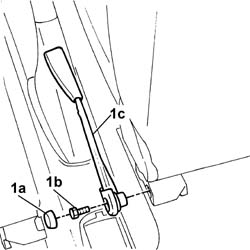

7065A14 ANCHORAGE ROD for , (one), front seat belt left or right - R.R.
- Path
- Procedures > 70 FITTINGS > 7065 SEAT BELTS AND ACCESSORIES > 7065A FRONT SEAT BELTS > 7065A14 ANCHORAGE ROD for , (one), front seat belt left or right - R.R.
- Kind
- repair procedure (removal / refitting; the operation number is the code)
- Applies to
- all engines; all production periods
- Interactive page
- https://sloeber94.github.io/elrnDB-fDbl/en/#/2585227
Applies to: all engines; all production periods
 Removing
Removing
 Refitting
RefittingMove the front seat back to the end of its travel.
1. Prise up protective cap (1a), undo bolt (1b) and remove link (1c).

Applies to: all engines; all production periods
Refitting
RemovingFit the link and tighten the retaining bolt.
 | Fastening | Component | Ø | Value (daNm) |
|---|---|---|---|---|
- | Bolt | FRONT SEAT BELT BRANCH WITH ATTACHMENT BUCKLE.. . | - | 4.0 |
Fit the protective cap.
Place the seats in their original position.
Topics that link to this page (8)
- O30 THE SEAT BELT DOES NOT ATTACH TO THE BUCKLE
- O31 SEAT BELTS LOCKED
- S70 SEAT BELT NOISE
- 1042B10 CNG supply PIPE from solenoid valve to pressure reduction unit - R.R.
- 3380A10 handbrake lever - r+r
- 3380A30 handbrake cable - r+r
- 7040L18 passenger compartment floor rear carpet - r r
- 7040L20 tunnel trim - r r